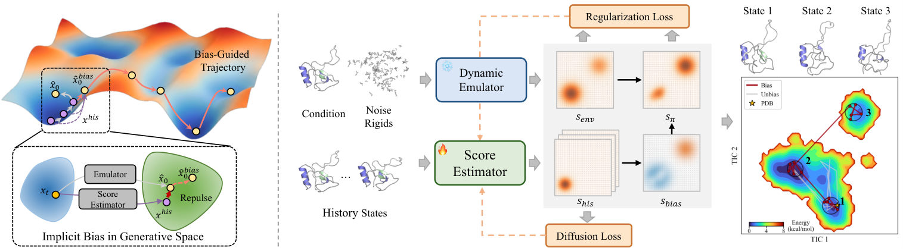
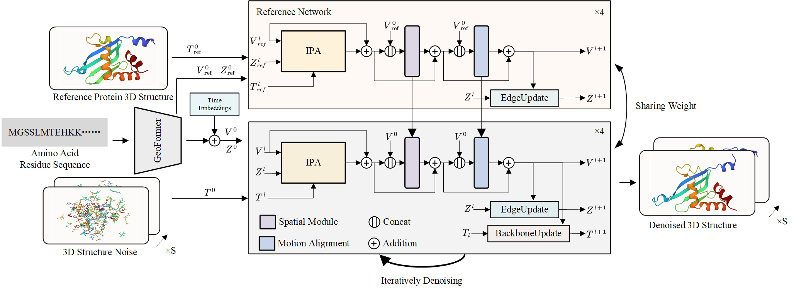
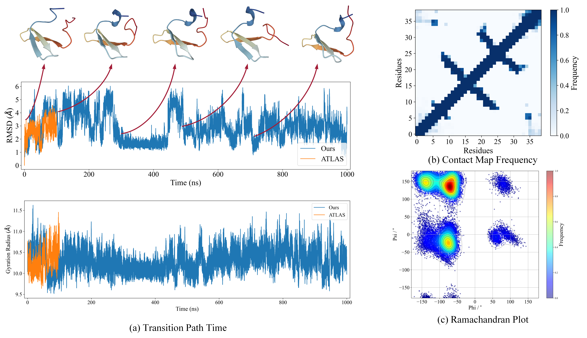
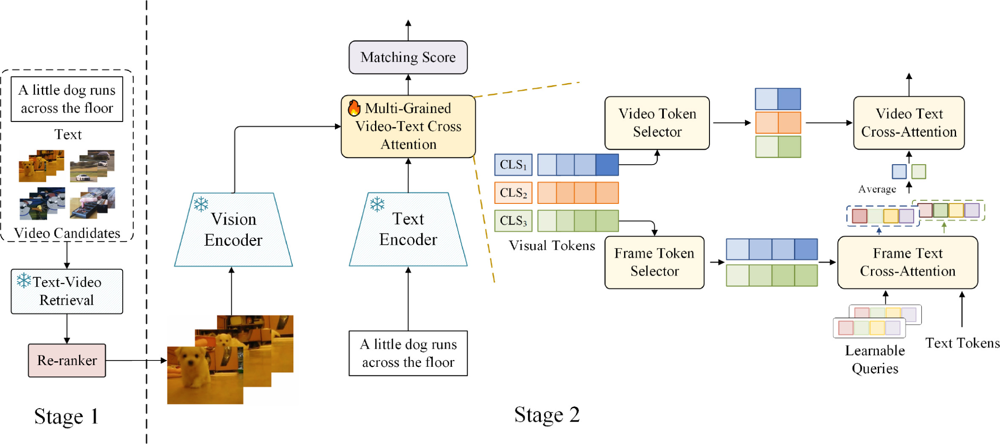

BiographyI am a Ph.D. student at Fudan University, advised by Prof. Siyu Zhu. My research focuses on generative models for protein dynamics and 3D generation. I study how these models can capture protein conformational changes over time, drawing on molecular dynamics simulations and physical properties. Research Interests
Projects & Publications Protein Dynamics
Learning Implicit Bias in Generative Spaces for Accelerating Protein Dynamics EmulationAuthors: Kaihui Cheng, Zhiqiang Cai, Wenkai Xiang, Zhihang Hu, Siyu Zhu†, Tzuhsiung Yang†, Yuan Qi† Venue: NeurIPS 2026 Description: A history-dependent bias guides a frozen protein dynamics emulator toward underexplored conformations. Paired with score-based refinement, it accelerates exploration while preserving structural validity during long-horizon rollouts.  Protein Dynamics
AlphaFolding: 4D Diffusion for Dynamic Protein Structure Prediction with Reference and Motion GuidanceAuthors: Kaihui Cheng, Ce Liu, Qingkun Su, Jun Wang, Liwei Zhang, Yining Tang, Yao Yao, Siyu Zhu†, Yuan Qi† Venue: AAAI 2025 Description: AlphaFolding jointly models protein backbones and side chains across multiple time steps. Trained on molecular dynamics trajectories, it combines reference-structure guidance with motion alignment to improve structural consistency and temporal coherence.  Dataset
Dynamic PDB: A New Dataset and a SE(3) Model Extension by Integrating Dynamic Behaviors and Physical Properties in Protein StructuresAuthors: Ce Liu, Jun Wang, Zhiqiang Cai, Yingxu Wang, Huizhen Kuang, Kaihui Cheng, Liwei Zhang, Qingkun Su, Yining Tang, Fenglei Cao, Limei Han, Siyu Zhu, Yuan Qi Status: Preprint, 2024 Description: Dynamic PDB contains approximately 12,600 proteins, each with a one-microsecond all-atom molecular dynamics simulation. It includes atomic velocities and forces, potential and kinetic energies, and temperature recorded at one-picosecond intervals. An accompanying SE(3) diffusion model incorporates these physical properties for protein trajectory prediction.  Text-Video Retrieval
Text-Video Retrieval Re-ranking via Multi-grained Cross Attention and Frozen Image EncodersAuthors: Zuozhuo Dai, Kaihui Cheng, Fangtao Shao, Zilong Dong, Siyu Zhu† Venue: Pattern Recognition 2025 Description: CrossTVR refines text-video retrieval results with multi-grained cross attention. Frame- and video-level token selectors identify salient visual information, while a frozen vision backbone reduces training overhead. The approach improves retrieval performance and scales to larger pretrained vision models. |